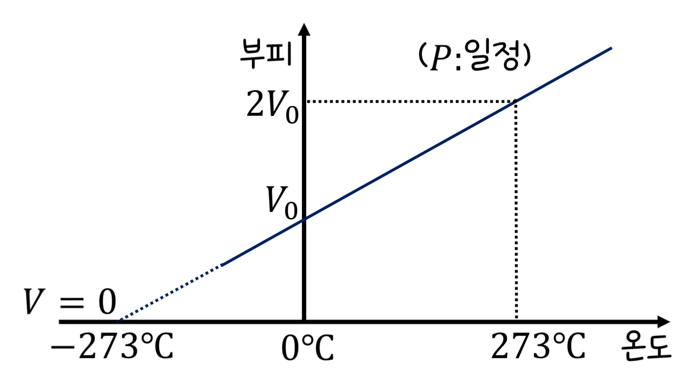

고3 물질과 에너지 · Ⅰ 물질의 세 가지 상태 · 웹툰 1~2화 「라이터 속 미지의 기체」·「잠수부의 공기통」
이상 기체 상태 방정식 — PV = nRT와 실제 기체의 벗어남
실험에서 헬륨·질소·이산화 탄소의 몰수(0.02~0.10 mol), 온도(200~500 K), 부피(0.5~5.0 L)를 바꾸며 이상 기체 압력과 반데르발스 실제 기체 압력을 비교했습니다. 압력은 n과 T에 비례, V에 반비례했고 기체 종류와 무관했으며, 고압·저온·큰 분자(CO₂)일수록 실제 기체가 이상 기체에서 벗어났습니다. 이상 기체 방정식, 몰질량 구하기, 부분 압력을 정리합니다.
- 웹툰 1~2화
- 실험: n·T·V 바꾸기
- 과학 원리
- 자습 노트
- 05 분자 사이 힘
실험에서 얻은 것
실험 데이터 되짚기
R = 8.314 J/mol·K. 반데르발스 상수(실측): He a 0.00346·b 23.7 × 10⁻⁶, N₂ 0.137·38.7 × 10⁻⁶, CO₂ 0.364·42.7 × 10⁻⁶. 기준 0.10 mol.
| 기체 | T | V | 이상 기체 P | 실제 기체 P | P_실제/P_이상 | 해석 |
|---|---|---|---|---|---|---|
| CO₂ | 300 K | 1.0 L | 249 kPa (2.46 atm) | 247 kPa | 0.99 | 상온·2 atm — 거의 이상 |
| CO₂ | 300 K | 0.5 L | 499 kPa | 489 kPa | 0.98 | 고압 → 인력 효과 |
| CO₂ | 200 K | 0.5 L | 333 kPa | 321 kPa | 0.965 | 저온 → 더 벗어남 |
| N₂ | 300 K | 0.5 L | 499 kPa | 497 kPa | 0.997 | 작은 분자 |
| He | 300 K | 0.5 L | 499 kPa | 501 kPa | 1.004 | 인력 거의 없음, 부피 효과만 |
| CO₂ | 600 K | 1.0 L | 499 kPa | 499 kPa | 1.00 | 고온 → 이상에 가까움 |
온도 2배 → 압력 2배, 부피 절반 → 2배, 몰수 2배 → 2배. 고압·저온일수록, 분자가 크고 극성일수록(CO₂ > N₂ > He) 차이가 큽니다. 1 atm·상온에서는 1 % 이내라 이상 기체로 충분합니다.
개념 정리
1. 이상 기체 상태 방정식과 몰질량 (웹툰 1화)
기체 분자가 크기가 없고 서로 힘을 주고받지 않는다고 보면(이상 기체) PV = nRT(R = 8.314 J/mol·K = 0.082 atm·L/mol·K) — 보일(T 일정: PV 일정), 샤를(P 일정: V ∝ T), 아보가드로(V ∝ n)를 하나로 합친 식. 압력은 분자가 벽에 부딪히는 충격의 합이므로 분자 수와 온도(속력)에 비례하고 부피에 반비례하며 기체 종류와 무관. 예측 게임 — 같은 온도·압력·크기의 헬륨 풍선과 CO₂ 풍선의 분자 수는? 뭉치 ‘무거운 CO₂가 더 많다’, 제로 ‘n = PV/RT가 같으니 같다’: 무게는 CO₂ 풍선이 11배 무겁지만 개수는 같습니다. 라이터 기체의 정체: 질량 감소 0.24 g, 모은 기체 100 mL(25 ℃, 1 atm) → n = 0.0041 mol → M = 0.24 ÷ 0.0041 ≈ 59 g/mol → 부탄(C₄H₁₀, 58). 0 ℃·1 atm에서 1 mol = 22.4 L, 25 ℃ 24.5 L. 기체 밀도 ρ = PM/RT — 같은 조건에서 몰질량에 비례(CO₂가 공기보다 무거움).
교재 그림
PV = nRT 속의 두 법칙 — 보일과 샤를


위: 온도가 일정하면 PV가 일정(보일). 아래: 압력이 일정하면 부피가 절대 온도에 비례(샤를) — 0 ℃에서 273 ℃로 올리면 절대 온도가 2배라 부피도 2배입니다. 여기에 몰수 n까지 합친 식이 PV = nRT입니다.
움직여 보기
분자 수·온도·부피를 바꾸면 압력은? — PV = nRT
점 하나가 분자 0.005 mol을 나타냅니다. 온도를 올리면 분자가 빨라져 벽을 더 세게·자주 치고, 부피를 줄이면 같은 분자가 벽을 더 자주 칩니다. 기체 종류를 바꾸면 속력은 달라져도(무거운 CO₂가 느림) 압력은 같습니다.
2. 실제 기체와 부분 압력 (웹툰 1~2화)
실제 기체는 분자 사이 인력(압력을 낮춤, a항)과 분자 자체의 부피(부피를 줄임, b항) 때문에 벗어납니다: 반데르발스 (P + an²/V²)(V − nb) = nRT. 보통 조건에서는 이상 기체 방정식이 꽤 잘 맞아 기상 풍선의 헬륨 양, 잠수용 공기통, 공장 배관 유량 관리에 씁니다. 부분 압력: 혼합 기체의 전체 압력은 각 기체가 혼자 있을 때 내는 압력의 합(돌턴), P_A = X_A × P_전체(X = 몰 분율). 예측 게임 — 에베레스트(0.33 atm) 공기의 산소 비율은? 제로 ‘훨씬 낮다’, 뭉치 ‘여전히 21 %’: 조성은 같지만 분압이 0.21 × 0.33 ≈ 0.07 atm으로 지표의 1/3이라 숨쉬기가 힘듭니다. 수심 30 m(4 atm): 산소 분압 0.84 atm(산소 중독 위험), 질소 3.1 atm(질소 마취) → 나이트록스·헬륨 혼합 기체를 씁니다. 과자 봉지의 질소 충전은 산화 방지.
움직여 보기
실제 기체 ÷ 이상 기체 — 언제, 어떤 기체가 벗어날까
0.10 mol, 반데르발스 식으로 계산했습니다. 부피를 줄이거나(고압) 온도를 내리면 CO₂ 선이 1에서 크게 내려갑니다 — 분자 사이 인력(a항)이 압력을 낮추기 때문. He는 인력이 거의 없어 분자 자체 부피(b항) 때문에 1보다 살짝 큽니다. 300 K·0.5 L에서 표 1의 0.98·0.997·1.004를 확인해 보세요.
3. 모형과 실제, 생활 속에서
반데르발스 식도 근사입니다. 임계점 근처나 액화 직전에는 더 정밀한 상태 방정식이 필요합니다. 라이터 실험의 실린더에는 물에서 증발한 수증기가 섞여 있어 정밀하게 하려면 수증기압을 보정해야 합니다. 타이어 공기압이 여름에 높아지고 겨울에 낮아지는 것, 과자 봉지가 산 위에서 부푸는 것, 잠수병(수압에 따른 기체 용해)이 PV = nRT이고, 기상 관측 기구는 올라가며 기압이 낮아져 부피가 수십 배로 커지다 터집니다.
R = 8.314 J/mol·K = 0.082 atm·L/mol·K · 0 ℃·1 atm 22.4 L · 0.10 mol·300 K·1 L → 249 kPa · CO₂ a 0.364 · 에베레스트 O₂ 0.07 atm
“물질과 에너지 1라운드! 두 풍선 속 기체 분자 수는? 난 이산화 탄소가 더 많다. 무겁잖아.” “온도, 압력, 부피가 같으면 n = PV/RT도 같아. 분자 수는 같아!”
웹툰 1화 · 무게는 11배, 개수는 같다 — 제로 1 : 0 뭉치
“2라운드! 에베레스트 정상 공기 속 산소의 비율은? 난 여전히 약 21 %.” “공기의 조성은 거의 같지만 전체 압력이 낮아서 산소 분압이 낮아진 거야. 폐에서 혈액으로 산소가 들어가는 건 분압에 달려 있어서 숨쉬기가 힘들어지지.”
웹툰 2화 · 0.21 × 0.33 ≈ 0.07 atm — 제로 1 : 1 뭉치
예제
미지 기체 0.50 g을 모았더니 27 ℃·1 atm에서 0.380 L였다. 몰질량과 정체는?
n = PV/RT = 1 × 0.380 ÷ (0.082 × 300) = 0.01545 mol → M = 0.50 ÷ 0.01545 = 32.4 g/mol → 산소(O₂, 32). 메테인(16)·CO₂(44)와 구별됩니다.
수심 40 m(5 atm)에서 산소 분압을 지표와 같은 0.21 atm으로 하려면 혼합 기체의 산소 몰 분율은?
X = 0.21 ÷ 5 = 0.042(4.2 %). 나머지는 질소 마취를 피해 헬륨으로 채우는 트라이믹스를 씁니다. 반대로 얕은 잠수의 나이트록스는 산소를 32~36 %로 높여 질소를 줄입니다.